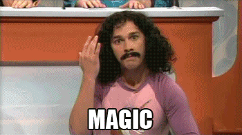

I’ve just noticed that Stage 2 emitters stop being held by mechanical devices and then rotate without being attached to anything. Is this meant to be some sort of quantum levitation or magnetic field?
Yes, it’s meant to be like that.

Frakkin’ magnets maaan.
How do they work?
So I wonder how does the emergency shutdown (that “needs fixing” lol) work? Is there time to catch them before cutting the power?
You really should relax, it’s just a videogame.
Yes, but it was explicitly shown that they were attached, and then they aren’t.
What are you talking about?
https://www.youtube.com/watch?v=L9vav3jZlPU&t=12m39s
They are attached to the holding thingys and after the sci says “stage 2 emmiters activating now” the holders move slightly outwards releasing the emmiters(or whatever the hell they’re called) and then retract. It’s not like they disappear all of a sudden.
I don’t know jack about physics, but if they’ve figured out teleportation, some sort of magnetic field or something of the sort sounds really elementary.
OK good enough.
But how does the emergency shutdown work then?
Since I doubt anyone actually knows or cares (since IT’S A GAME, NOT REAL LIFE SO IT DOESN’T MATTER) lets pretend that they don’t give a shit what happens after the emergency shutdown. They’d rather shut the damn thing down and have the emitters flung across the chamber than have a full scale alien invasion.
on emency shutdown, is a procedure, not an instant stop
the power is slowly lower, wich causes the resonating frequences to stop resonating
the emiters will roatate slower, and thier holders will come back out to catch them
Its quite simple when you get down to the nitty gritty of it.
The Stage 2 emitter knows where it is at all times. It knows this because it knows where it isn’t. By subtracting where it is from where it isn’t, or where it isn’t from where it is (whichever is greater), it obtains a difference, or deviation. The guidance subsystem uses deviations to generate corrective commands to drive the Stage 2 emitter from a position where it is to a position where it isn’t, and arriving at a position where it wasn’t, it now is. Consequently, the position where it is, is now the position that it wasn’t, and it follows that the position that it was, is now the position that it isn’t.
In the event that the position that it is in is not the position that it wasn’t, the system has acquired a variation, the variation being the difference between where the Stage 2 emitter is, and where it wasn’t. If variation is considered to be a significant factor, it too may be corrected by the GEA. However, the Stage 2 emitter must also know where it was.
The Stage 2 emitter guidance computer scenario works as follows; Because a variation has modified some of the information the Stage 2 emitter has obtained, it is not sure just where it is. However, it is sure where it isn’t, within reason, and it knows where it was. It now subtracts where it should be from where it wasn’t, or vice-versa, and by differentiating this from the algebraic sum of where it shouldn’t be, and where it was, it is able to obtain the deviation and its variation, which is called error.
oh gawd
fleistad that is how missiles work not what the stage 2 emitters my best guess is they are Ionocraft.
Ionocraft take large amounts of energy to work though, but this is blackmesa so my guess is they might have a wireless power supply some where for them.
There can be stage 2 emitters inside of missiles.
Back up magnets. Surely a place like Black Mesa would have back ups to shut off equipment without breaking it